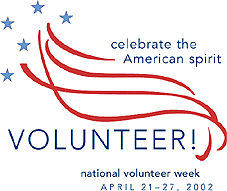

- services -
 |
Our mission is to provide high quality education through undergraduate, graduate, and research programs to benefit the citizens and industry of North Carolina and beyond. Our department is working to build a community that is inclusive and welcoming to all people, including those with disabilities. Visit the Disability Services for Students Web site for more information about their services. .. |
|
For Details Call 1-800-483-REAL Download e-Brochure REAL Services is the most comprehensive PdM Laboratory with practical experience relating Equipment Particle Analysis (Ferrography; EPA), Used Lubricant Analysis (ULA), Thermography and related documentation necessary for conducting your comprehensive PdM program. . Real Services Welcome to REAL Services your only source for Effective PdM Service. For Details Call 1-800-483-REAL Download e-Brochure REAL Services is the most comprehensive PdM Laboratory with practical experience relating Equipment Particle Analysis (Ferrography; EPA), Used Lubricant Analysis (ULA), Thermography and related documentation necessary for conducting your comprehensive PdM program. . |
Jobs Available Video Library Maps to our Offices E-mail Addresses Got a Question. is the Area Agency on Aging for the five county area of Elkhart, Kosciusko, LaPorte, Marshall and St. We provide in-home and community services to the elderly, disabled and low-income in our five county area and some services are offered in Fulton County. come and join us for this free lunch-time program, including lunch. .
|  |
|
For information on North Carolina Vital Statistics see our Odum Institute's North Carolina Vital Statistics Page Search Our Catalog of Social and Health Data Holdings. . For more information about our data services at The Odum Institute go to The Data Services Information Page. For instruction on downloading and using the information contained in the Data Archive see our Instructions For Accessing Files Page. For information on North Carolina Vital Statistics see our Odum Institute's North Carolina Vital Statistics Page Search Our Catalog of Social and Health Data Holdings. |
further information: http://www2.irss.unc.edu/irss/dataservices/dataservicesindex.asp